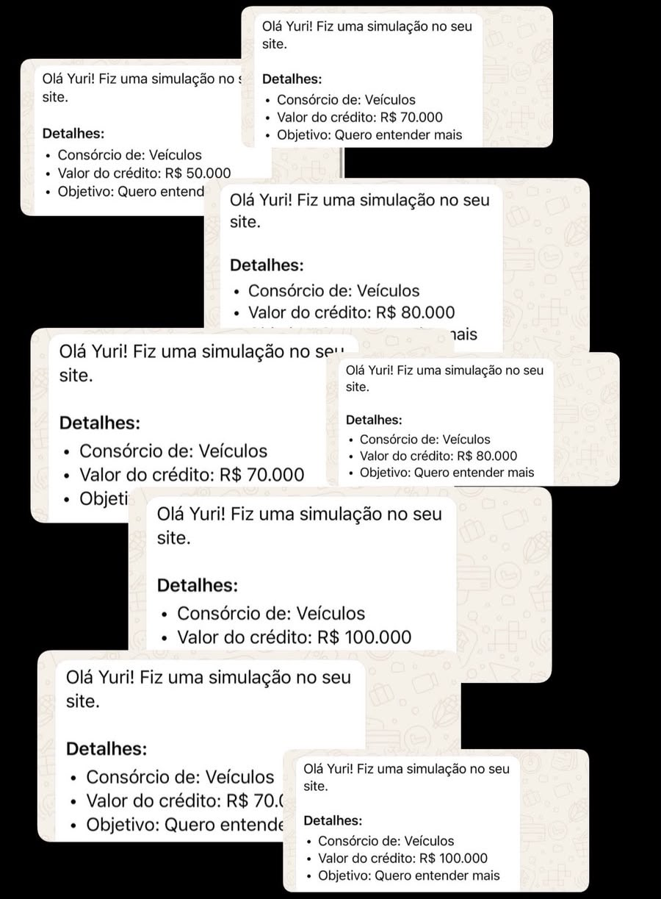
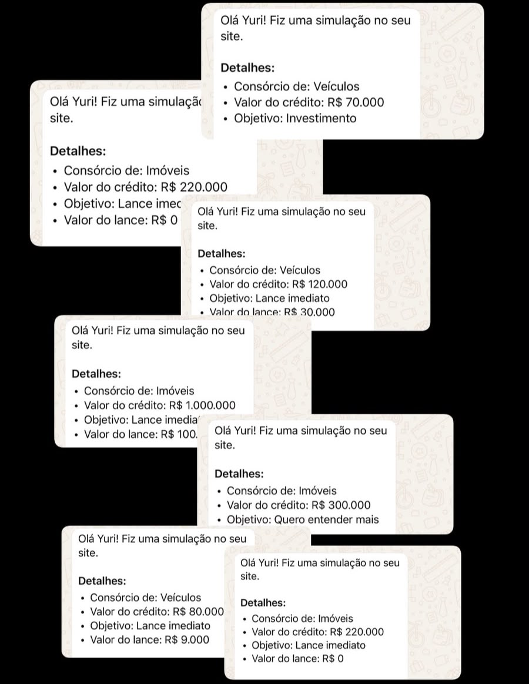
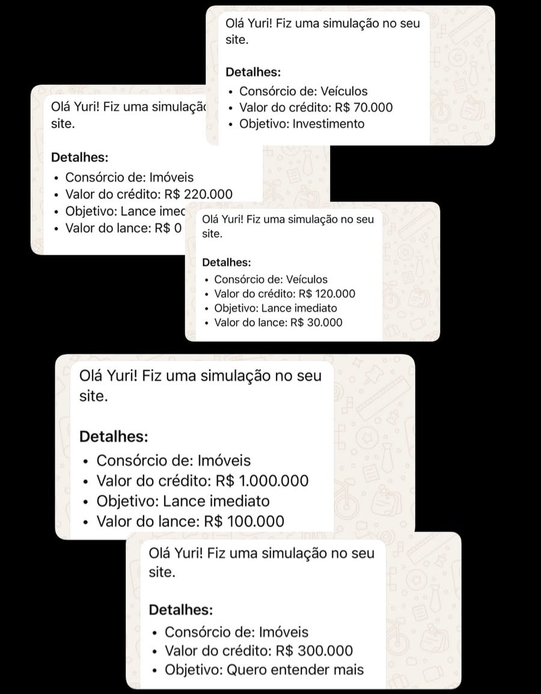

Você posta.
E ninguém chama.
Falta saber o que publicar, como apresentar seu trabalho e como transformar interesse em conversa.
Tudo que você precisa para destravar suas vendas.
Conteúdos, scripts e materiais de apoio em uma plataforma para acessar pelo navegador e pelo seu celular.
DOS MEUS VÍDEOS PARA O MEU WHATSAPP
Com meus vídeos no orgânico, atraí pessoas interessadas em consórcio sem investir em tráfego pago para essas conversas. Elas chegaram ao meu site, fizeram uma simulação e me chamaram no WhatsApp com um objetivo em mente.
Veja alguns dos pedidos que recebi:



Registros de pedidos de simulação recebidos por mim.
No meu Playbook, compartilho como organizar seu Instagram, planejar conteúdo e conduzir o atendimento da primeira mensagem até a proposta. É esse caminho que quero ajudar você a construir.
Quero aprender a atrair interessadosVOCÊ SE RECONHECE AQUI?
Falta saber o que publicar, como apresentar seu trabalho e como transformar interesse em conversa.
A conversa vai direto para a parcela, antes mesmo de você entender o que aquela pessoa precisa.
Fica a dúvida: insistir, esperar ou mandar mais um “oi, tudo bem?”. Sem um próximo passo, a oportunidade esfria.
Você pode aprender um processo para cada uma dessas etapas.
COMECE A CONSTRUIR SUA CARTEIRA
Ter um perfil é o começo. No Playbook, você aprende a conectar conteúdo, prospecção, atendimento e acompanhamento em uma rotina de vendas.
Organize seu perfil e seus conteúdos para comunicar o que você faz e iniciar novas conversas.
Entenda objetivo, prazo e momento do cliente antes de apresentar uma proposta.
Aprenda a apresentar, lidar com dúvidas e retomar o contato com contexto.
PLAYBOOK DO VENDEDOR DE CONSÓRCIO
De R$ 97,00 porR$ 37,90+ Bônus - Acesso Gratuito (trial) à Plataforma roiLead.
O sistema roiLead é uma plataforma que te entrega Leads (clientes) segmentados e qualificados para prospecção.
Você receberá o acesso pelo e-mail.
Quero aprender a atrair clientesUM CAMINHO PARA VOCÊ SEGUIR
10 partes · 65 capítulos.
Abra cada parte e veja o que vai aprender.
CHEGA DE COMEÇAR DO ZERO
Tenha modelos para adaptar ao cliente e à etapa da conversa. Consulte enquanto organiza seus atendimentos.
Uma base para preparar sua abordagem, personalizar suas mensagens e sair do improviso.
Saiba o que perguntar antes de oferecer.
Organize sua apresentação ao cliente.
Revise sua proposta antes do próximo contato.
Pare de depender da inspiração para planejar seus temas.
Consulte os termos que aparecem na sua rotina.
INCLUÍDO NO SEU ACESSO
Além dos capítulos de Instagram do Playbook, você recebe o módulo complementar “Instagram que vende consórcio”: um caminho para trabalhar seu perfil, conteúdo e conversas.
ANTES DE COMEÇAR
Sim. O material aborda desde a postura do vendedor e a busca por clientes até atendimento, proposta e acompanhamento. Você pode estudar na ordem e aplicar aos poucos.
É um Playbook digital para leitura online, organizado em partes e capítulos, com scripts e materiais de apoio. O módulo complementar também tem aulas em texto.
Após a confirmação do pagamento, você recebe por e-mail as instruções para acessar o Playbook. Use o mesmo e-mail da compra no login.
Os capítulos de Instagram do Playbook ficam disponíveis com o conteúdo principal após a aprovação da compra. O módulo complementar “Instagram que vende consórcio” é liberado após 7 dias.
Você pode começar estudando como organizar seu perfil, planejar conteúdo e prospectar. Não há exigência de um número mínimo de seguidores para usar o material.
A leitura dá direção; a aplicação faz parte do trabalho. Resultados dependem da sua execução, do mercado e dos clientes. O material não garante uma quantidade de vendas, seguidores ou renda.
DÊ DIREÇÃO À SUA PRÓXIMA CONVERSA
Comece identificando o que merece atenção na sua rotina.
Depois, conheça seu próximo passo com o Playbook.
Diagnóstico rápido · 5 perguntas · Sem cadastro